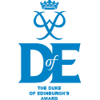
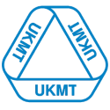
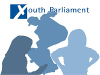

Most Renowned Achievements
The following pages are designed to give you a brief overview of my life within my short time at Henry Compton/Fullham College Boys' School. The motto of our school has alsways been to embrace opportunity, and this portfolio will demonstrate to you how I have upheld this expectation throughout my time at school, from my Youth Parliament campaign to my ICT Coursework files, the highlights of my 4 years and my biggest achievements are all here for you to see.

DofE Award
The DofE award is a complex series of tasks designed to test the strengths of individuals
Deputy Head
Between the years 2014-15 I stood as one of 2 Deputy Heads at Fulham College Boys'
2014 Exams
In 2014 when I was in year 10 I took six of 9 of my AQA GCSE science exams a year early.

Maths Award
The UK Mathematics Challenge is a regulated exam designed to test mathematical abilitiy
Political Career
Kickstarting my political career is to date one of my biggest achievements. In 2015 I ran for UKYP and earned a place on the H&F Youth Council.

The council meets on a bi-weekly basis to
discuss issues relevant to the local residents.
(click here for more information)
In 2015 I ran to represent H&F as my local constitueny. My campaign, focusing on the National Curriculum ran for 3 months and succesfully combated many key issues such as voter apathy (nearly 100% of the electorate voted)